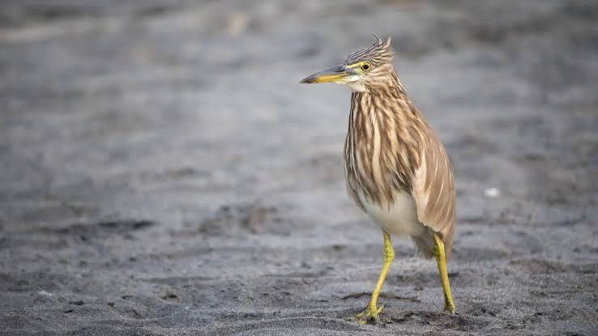

Pond herons
Birds
Pond herons are herons, typically 40–50 cm long with an 80–100 cm wingspan. Most breed in the tropical Old World, but the migratory squacco heron occurs in southern Europe and the Middle East and winters in Africa. The scientific name comes from Latin ardeola, a small heron.
Scientific name: Ardeola
Phylum: Chordata
Order: Pelecaniformes
Rank: Genus
Higher classification: Heron
Mass: Chinese pond heron: 300 g, Squacco heron: 290 g
Biology of Pond herons
Food and feeding
The Indian pond heron's feeding habitat is marshy wetlands. They usually feed at the edge of ponds but make extensive use of floating vegetation such as water hyacinth to access deeper water.
They may also on occasion swim on water or fish from the air and land in deeper waters. They have also been observed to fly and capture fishes leaping out of water.
Sometimes, they fly low over water to drive frogs and fishes towards the shore before settling along the shoreline. They have been noted to pick up crumbs of bread and drop them on the water surface to bait fishes.
The primary food of these birds includes crustaceans, aquatic insects, fishes, tadpoles and sometimes leeches (Herpobdelloides sp.).
Outside wetlands, these herons feed on insects (including crickets, dragonflies[22] and bees[23]), fish (Barilius noted as important in a study in Chandigarh) and amphibians.
Breeding
The breeding season begins with the onset of the monsoons. They nest in small colonies, often with other wading birds, usually on platforms of sticks in trees or shrubs. Most nests are built at a height of about 9 to 10 m in large leafy trees.
The nest material is collected by the male while the female builds the nest. Three to five eggs are laid. The eggs hatch asynchronously, taking 18 to 24 days to hatch. Both parents feed the young.
Fish are the main diet fed to young. Nest sites that are not disturbed may be reused year after year.
Mortality factors
They have few predators but injured birds may be taken by birds of prey.
An arbovirus that causes "Balagodu", trematodes and several other parasites have been isolated from the species.
Antibodies to Japanese encephalitis and West Nile virus has been detected in pond herons and cattle egrets from southern India. Traces of heavy metals acquired from feeding in polluted waters may be particularly concentrated in the tail feathers.